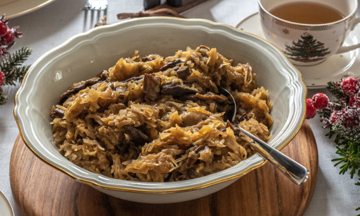

– 40 g suszonych grzybów
– 400-500 g kapusty kiszonej
– 1 średniej wielkości cebula
– 1 łyżka oleju
– sól
– pieprz
1.Grzyby włóż do większej miski, zalej ugotowaną wodą tak aby zakryła grzyby i namaczaj przynajmniej przez całą noc, 12-16 h.
2.Grzyby przelej do garnka razem z wodą i gotuj na niewielkim ogniu przez 15 minut. Po ugotowaniu grzybów odlej wodę i zachowaj, a grzyby posiekaj na drobniejsze kawałki.
3.W czasie gotowania grzybów przygotuj pozostałe składniki. Cebulę drobno posiekaj, kapustę także możesz przesiekać drobniej, to zależy jak duże kawałki kapusty będą.
4.Na odrobinie oleju podsmaż cebulę – wystarczy, by się zeszkliła. Dodaj do cebuli pokrojone grzyby oraz kapustę i zalej 1 szklanką płynów. Wykorzystaj tu wodę z gotujących się grzybów i dodaj do niej czystą wodę, najlepiej przegotowaną.
5.Gotuj kapustę przez 20-30 minut na średnim ogniu, aż kapusta zmięknie i woda wyparuje. Pod koniec gotowania mieszaj od czasu do czasu aby kapusta się nie przypaliła, jeśli kapusta tego wymaga uzupełnij jeszcze odrobiną wody. Dopraw kapustę solą i pieprzem do smaku.